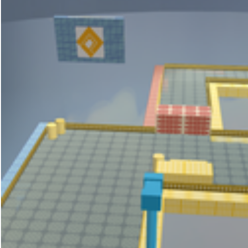
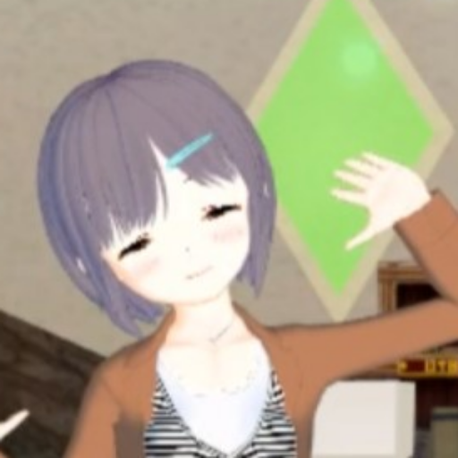
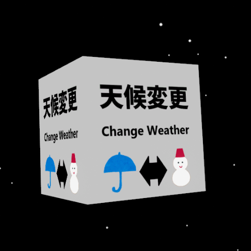

自己紹介
現在、N高等学校 第2学年所属。
将来に向けてプログラミング等勉強中。
趣味
趣味面では、かなりのニコ厨。
VR(HTCVIVE)でバーチャルキャスト界隈に出没中。
VRChatは3D酔いしてしまってあまり行けてない。
拡張機能や3D空間で使えるアイテムなど様々なものを製作中。
アイデアを形にしたくてモノづくりをしているので、
わからないことにぶつかってから調べるスタイル。
- 2015年頃~ niconicoを知り(良い意味で)沼へ
- 2016年末~ ゲーム「#コンパス」にハマる
- 17.02.08~ 生主活動開始
- 17.12.04~ ニコニコ大百科編集開始
- 2018年4月 バーチャルキャストがサービス開始。ここからVRに興味を持つ
- 18.10.17 WindowsMRを購入。Vキャス開始
- 2018年夏~ マストドンインスタンス「friends.nico」に入り浸りニコニコする
- 2019年4月 N高等学校に転入学。
- 2019年4月 ニコニコ超会議に初参加。
- 2019年末 個人サークル「月夜の野良ねこ屋」を開設
- 2020年春 バーチャルマーケット4に出展予定
受賞歴
なし資格
なし大会参加歴
- 情報オリンピック2019
やってること
- ニコニコ大百科編集者
- 競技プログラミング (Atcoder:灰)
- VCI(バーチャルキャスト上で使えるアイテム)製作
挑戦していること・したいこと
- JavaScript 勉強中
- Lua勉強中
- 3Dモデリング
- ブラウザ拡張機能 (JavaScript/JQuery)
- アイデアを形にするためにいろいろ勉強中
作品一覧
3月以降の分はポートフォリオのリニューアルをお待ち下さい。
開発年
【#コンパス】でらクランクストリート再現モデル GLB
初モデリングです。Unityで制作しました。「#コンパス 戦闘摂理解析システム」に登場するステージを再現しています。 現在、ニコニ立体・THE SEED ONLINEにて公開中。バーチャルキャスト内で利用できます。
2019.03.05
バーチャルキャスト用名刺 VCI
バーチャルキャスト内で見ることができる名刺です。欲しい人は取り込んでみてください。
グリップボタンでクリック（onUse)すると絵柄が変わります。
2019.03.07
ポートフォリオ（このサイト）HTML5/CSS3
実際に0からページを書いて公開したのは初でした。
いろいろと思ったこと・今後の課題等はQiitaに投稿しています。
初版作成：2019.07.11
最終更新：2020.02.01
テレビとかでよく出るアノ単位に換算してくれるヤツHTML/CSS/JS
「N予備校 動くWebページコンテスト 2019夏」提出作品。
km2からテレビでよく見るアノ単位に換算してくれるヤツです。
2019.08.18
リンク集/連絡先ページHTML5/CSS3
リンク集ページ。ポートフォリオサイトとは違って、適用させるCSSを変えずにPC/SPで綺麗に見れるようにしました。
初版作成：2019.10.07
最終更新：2020.02.01
WebVRポートフォリオHTML5/A-frame
A-frameを利用してWebVRポートフォリオを作りました。
Qiita「N高等学校 アドベントカレンダー2019」に乗せる予定です。
2019.11.23
天候VCIVCI

onUse(Grip)すると、天候:雪・雨が切り替わります。
Effekseerでのエフェクトなので、当たり判定は無いです
（イコール、傘貫通しますｗ）
TSOにて公開中。バーチャルキャスト内で利用できます。
2019.11.27